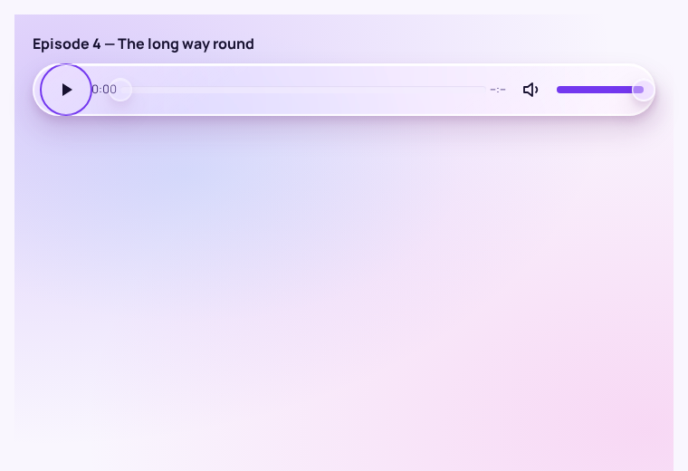
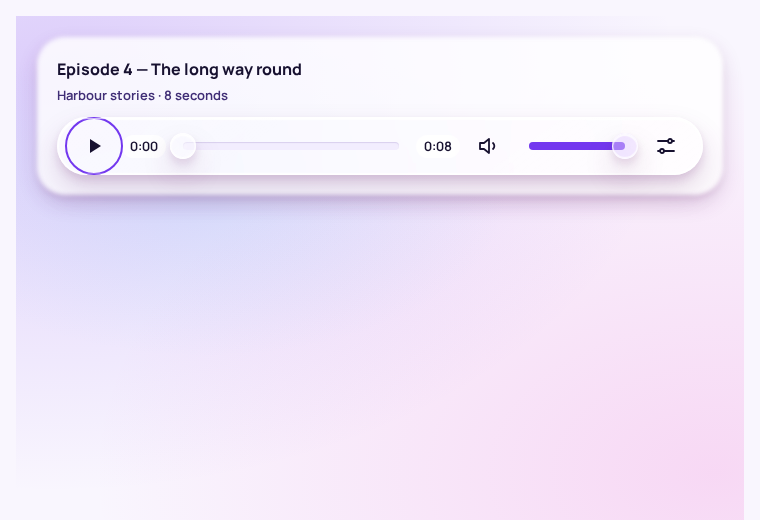
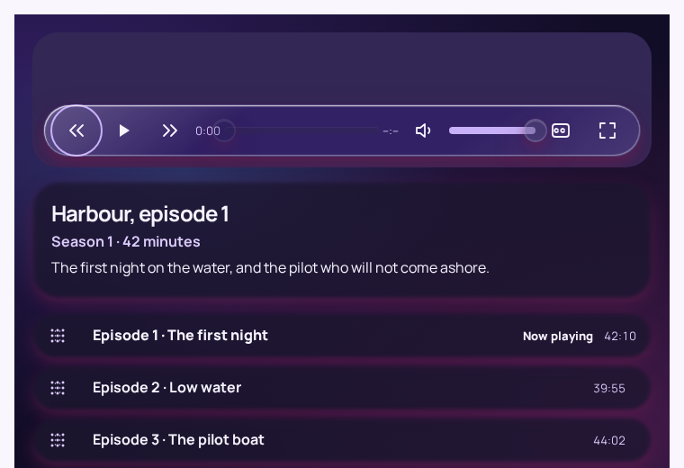
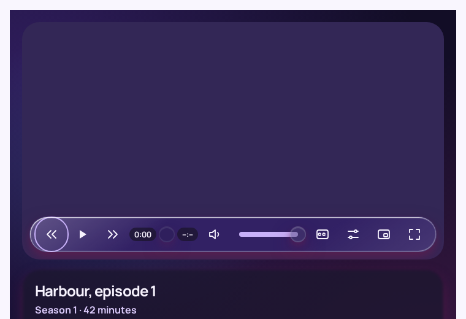
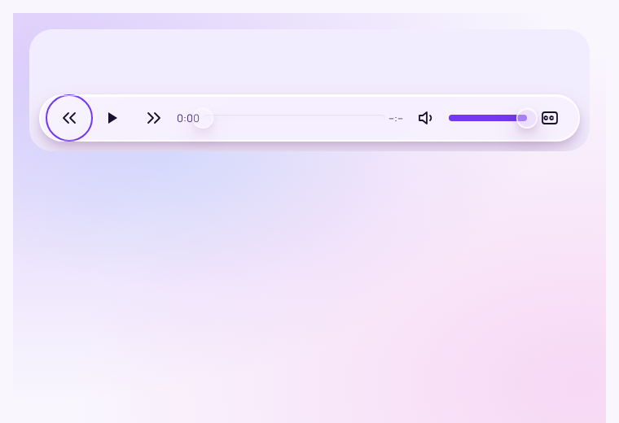
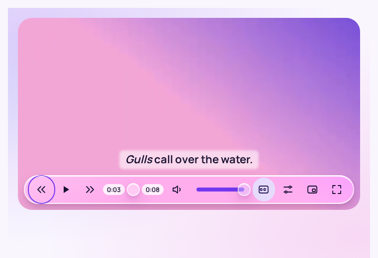
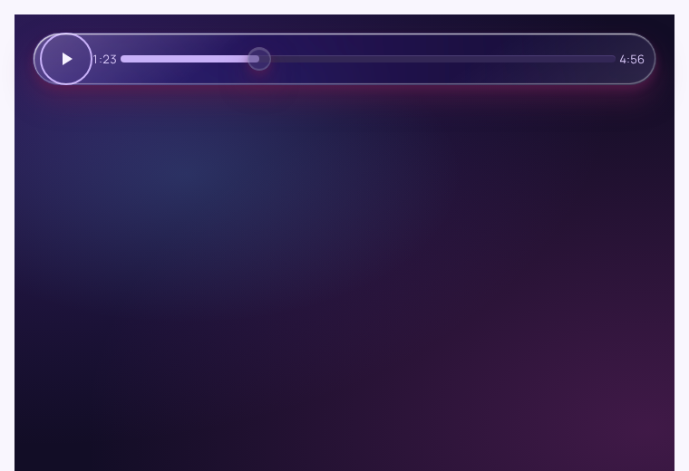
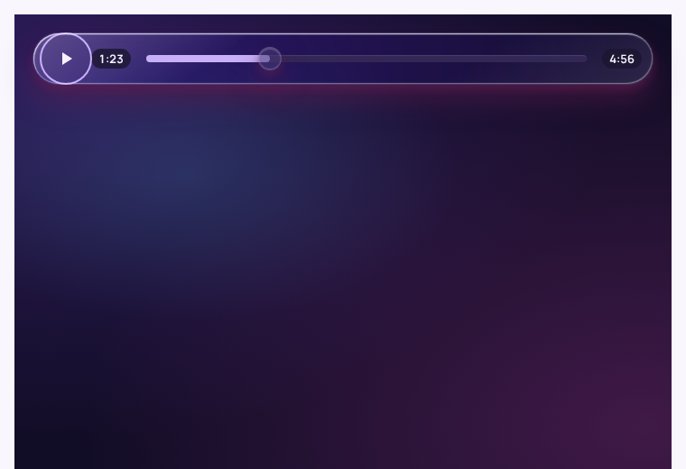

The media recipes
The stage, the transport, the caption cue and the audio card, as core/assets/crystal.css renders them after 2.3.1. The players below are real <video> and <audio> elements playing a generated clip with two audio tracks and captions in two languages; a few lines of script drive them so the recipes can be seen in use. The behaviour a product ships is Crystal React's VideoPlayer and AudioPlayer.
The video player .cr-media, .cr-media-bar, .cr-resin.transport, .cr-media-caption
Speed
Subtitles
Audio
audioTracks (Safari); this page says which yours is. Crystal React nests these as a submenu per choice, so the menu stays short over a short picture.The harbour at dusk.
--cr-media-transport (58px: the 48px target, 4px above and below, the rim) plus the 12px inset twice, so the cue sits 12px above the bar whether or not the bar is shown, so it never jumps when a pointer arrives.Aspect ratio and fit --cr-media-aspect, --cr-media-fit
contain, nothing the author filmed is cropped); 9:16 fills with cover, for a portrait clip. The letterbox is --cr-surface-alt, so it follows the palette and mode.The audio player .cr-haze.cr-media.audio
Episode 4: The long way round
Harbour stories · 8 seconds
background: revert-layer in the recipe hands the background back to Haze, which the stage's letterbox would otherwise paint over.Before and after Crystal React, captured with Playwright, light and dark








The captures are Crystal React's Storybook at the stories named in each file, focused with one Tab so the transport shows. They are in ../captures/ with a README saying how they were taken.